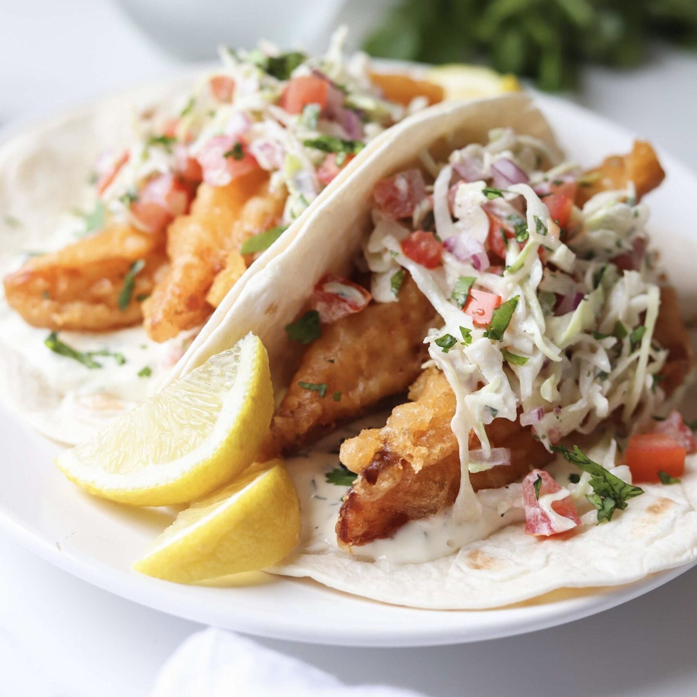

Fish Tacos

Ingredients
Taco
- fish (Tilapia)
- shrimp
- tortillas
Cream
- 2 teaspoon water
- 2 teaspoon lemon
- 1 tablespoon milk
- 1/3 cup of mayo
- 2/3 cup of Mexican cream
- Pinch of ground pepper
- Pinch of salt
- Optional: Hot sauce
Pico de Gallo
- Tomato
- Onion
- Cilantro
- Salt
Batter
- 1/2 lb of flour
- 1/2 teaspoon salt
- 1/2 teaspoon pepper
- 3 eggs (or 3 egg whites)
Directions
- Wash and dry fish (or shrimp).
- Cover with flour.
- Dip in batter.
- Deep fry.
Serving Instructions
- Place fritters on a tortilla.
- Add julienne sliced cabbage on top.
- Add pico de gallo salsa.
- Pour some cream on the taco.
- Enjoy!